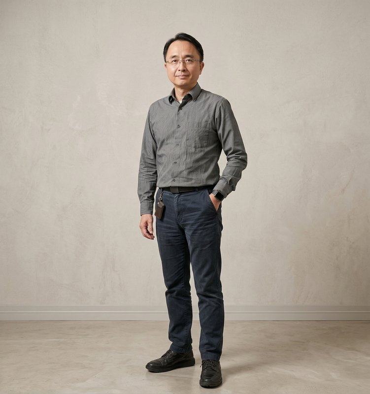
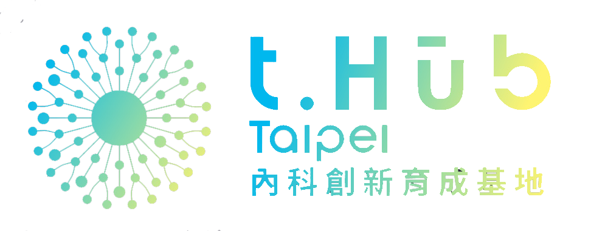

n8n 國際原廠認證
全台首場官方授權認證考場，現場考取 n8n Level 1 國際證書，履歷直接升級，國際通用。
四個你加入的理由，每一個都是履歷級的收穫
全台首場官方授權認證考場，現場考取 n8n Level 1 國際證書，履歷直接升級，國際通用。
由 AMD 與 TUL 撼訊科技獨家贊助，總冠軍可獲得頂級神秘大獎，將於決賽當日盛大揭曉。
完整 n8n 中文教材、實機演練、社群問答支援，全程零費用。由博碩文化專業教材背書。
晉級決選者享有虎智科技、撼訊科技實習與面試綠色通道，直接被業界看見。
由德國 n8n GmbH（n8n 原廠）推出的入門級國際認證。認證通過者將在 n8n 全球系統內留下唯一識別 ID，可在履歷平台上標註此資格，證書永久有效。
本活動由 Morris Lu（n8n 台灣首位官方 Ambassador）主辦，獲 n8n 原廠正式授權使用 Level 1 考試系統。
無論是否得獎，所有完賽者皆獲得 n8n Level 1 國際認證電子證書、虎智科技實務結業證書，以及合作企業媒合資源。
三階段全程免費（前哨站、工作坊講座、黑客松決賽），由 n8n 原廠、虎智科技、博碩文化、臺科大創新育成中心、AMD × TUL 撼訊科技、Zeabur 聯合贊助。你只需付出時間與好奇心。
台灣專業技術書籍領導品牌，所有教材內容經專業編輯審核。
Morris 過往培訓的學員已進入 Appier、iKala、KKCompany 等台灣頂尖 AI 公司。
從線上說明會開始，一路到全台聯合決賽
45 分鐘了解全貌，取得校園推薦碼
由 Morris 主講 n8n 使用示範
博碩文化開場引薦與 Q&A
結束後取得專屬校園推薦碼，可邀請學生參加認證
前哨站已結束，報名已截止
三場已完賽 · 認證通過學生直接晉級決賽
n8n 基礎與進階實作教學
n8n Level 1 國際認證現場考試
實機體驗 + 黑客松題目說明
感謝所有參與的老師與學生 · 8/7 決賽現場見
用你的作品決勝負
取得認證者將自動獲得決賽資格
賽前兩週公布完整題目
展示 × 評審 × 頒獎 × 企業媒合
決賽已圓滿結束 · 所有作品、影片、團隊資訊都在作品展示頁
下方每張都是主辦方拍的官方照片 · 歡迎自由下載、分享 · 標記 @tigerai.tw
依 n8n 原廠規範，工作坊報名集中於 Luma；網站表單保留為輔助登記管道。
B1 啟垣廳（第四國際會議廳）
台中市西屯區文華路 100 號
Google Maps 開啟台科微型車庫 · 第三學生宿舍 地下 1 樓
台北市大安區基隆路四段 43 號
Google Maps 開啟創夢工場暨創客基地 · 創意教學室 J001
高雄市燕巢區鳳雄里大學路 1 號
Google Maps 開啟三場工作坊已全部結束 · 通過認證的學生請留意 8/7 決賽相關通知
完整題本將於決賽前兩週公布，讓你的作品真正解決真實問題
讓校園生活更聰明
系辦文書、選課通知、課程提醒、活動報名、社團事務的智慧化應用。
中小企業的神隊友
CRM、行銷文案、客服知識庫、會議摘要，用 n8n 幫企業節省人力成本。
讓創作者專注在創意本身
短影片企劃、社群貼文、品牌視覺、媒體自動排程的 AI 輔助流程。
用科技為好事加速
為 NPO、偏鄉教育、社區長者、環保議題打造能真正解決痛點的 AI 工具。
參賽手冊、決賽題本 —— 兩份都可下載，離線細看
完整參賽手冊：參賽資格、賽制時程、團隊組成、評分標準、獎項、智財、行為準則、關鍵時程、聯絡窗口。
四大題目方向詳版：每題的必要功能、加分項、範例方向、可用資料集與 API。
對規則或題目有疑問？來信 tiger.ai.tw2024@gmail.com（主旨：「決賽題本 Q&A」，48 小時內回覆）
「台灣有強大的技術社群，而 n8n 是讓非資訊背景的人也能打造 AI 工作流的最佳橋樑。這場黑客松，我希望看到的不是誰寫最多 code，而是誰解決最真實的問題。」 — Morris Lu
總獎品由 AMD × TUL 撼訊科技 × Zeabur 聯合贊助
更多合作夥伴特別獎陸續公布中...
跨產業觀點，讓你的作品被真正看見
「我看過最多失敗的 AI 作品，問題從來不是技術不夠炫，而是沒有解決真實的問題。」
「AI 與自動化正在重新定義商業的可能性。我期待看到的，不是最炫的技術，而是真正能解決問題、創造價值的商業模式。」
「好的作品除了能不能運作之外，更重要的是它能不能真正解決企業問題，並從一個好點子走到可驗證、可導入、可持續的商業模式。」
「當自動化工具把『做完』的門檻降到最低，能精準驗證『做對』，就成了開發者最無可取代的價值。」

「AI 越強大，使用它的責任就越大。懂得保護資料的開發者，才是值得信任的開發者。」
「最美的自動化不是炫技，而是讓使用者根本感覺不到它的存在。」
「n8n 讓每個人都能成為工程師，我想看見你用它做出意料之外的東西。」
「好的自動化不是省事，而是讓你把時間花在真正重要的事情上。」
「能跑得通是基本，能跑得穩、跑得久才是好作品。」
五個維度、總分 100，每一分都有依據
完整評分細則與各維度評分表將於決賽前兩週寄送至參賽者

n8n 原廠授權 Level 1 國際認證 · Morris Lu 為 n8n 台灣官方 Ambassador
獨家硬體獎品贊助 × 行銷支持

雲端運算點數贊助 × 學生帳戶支援

找不到答案？直接寄信給我們
三階段全程免費。由 n8n 原廠、虎智科技、博碩文化、臺科大創新育成中心、TUL 撼訊科技、Zeabur 共同贊助。
可以！n8n 是視覺化拖拉工具，不需要寫 code。我們特別歡迎商管、大傳、設計等非資訊類科系學生參加。
開放大專院校或高中職在學生報名。每隊必須有至少 1 位成員持有 n8n Level 1 國際認證（工作坊講座取得、或自行考取皆可）。
決賽以團隊形式參賽，每隊 1–4 人皆可（單人也能參賽）。可跨校、跨系組隊。每隊必須有至少 1 位成員持有 n8n Level 1 認證。
老師可報名線上「前哨站」說明會，了解如何將計畫導入課程；登記後即可直接出席實體「工作坊講座」，與學生一同實作。若錯過前哨站，也能在報名時直接選擇參加工作坊，無需另外報名或推薦碼。
三區皆為 13:00–17:00：中部場 7/21 逢甲大學、北部場 7/24 臺灣科技大學、南部場 7/27 高雄科技大學。完整地址與 Luma 報名連結請見 工作坊地點 區塊。
你需要：一台筆電（可連網）、學生證、參賽團隊成員、以及你對題目的創意。技術與平台由主辦方提供支援。
智慧財產權完全歸參賽者所有。主辦方僅保留「公開展示與宣傳」的非商業權利。
可以遠端參賽！透過 Google Meet 加入 —— 一樣可以展示 Demo、上台 Pitch、爭取獎項。上傳作品時勾選「遠端參賽」即可。
暫時不提供住宿補助。對於中南部參賽團隊，主辦方將協助媒合同行資訊，詳情於報名後另行通知。
本活動由 n8n 台灣首位官方 Ambassador Morris 主辦，獲 n8n 原廠認證授權使用 Level 1 考試系統。所有通過認證的學生將取得 n8n 全球通用的官方證書。
歡迎來信：tiger.ai.tw2024@gmail.com
或加入 n8n Taiwan User Group Facebook 社團詢問。
2026/8/7 台北決賽 · 全台大專隊伍 4.5 小時完成 AI 自動化作品 · 全部作品已對外公開
📸 官方現場照片相簿 · 評審、媒體、校方、贊助商皆可自由取用 · Google Drive 相簿